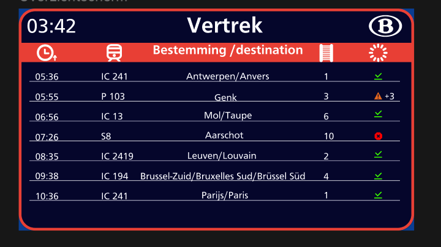
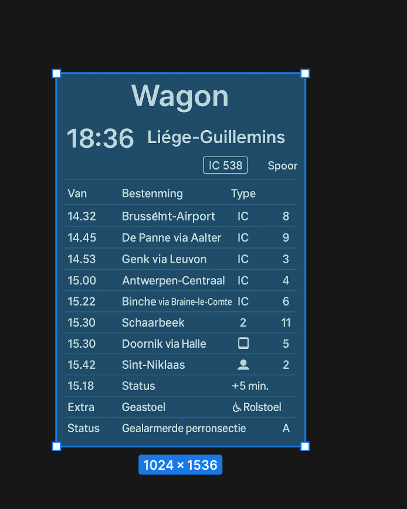
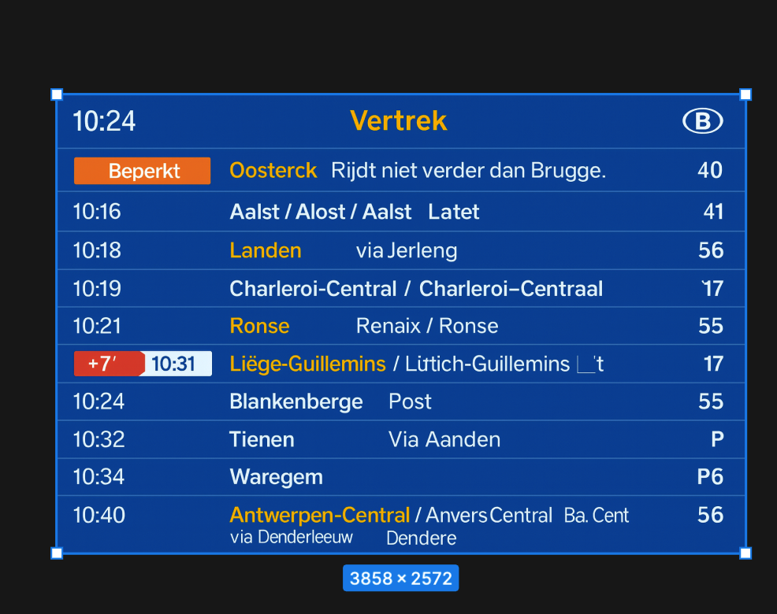
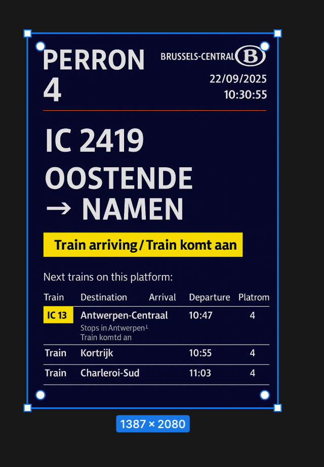
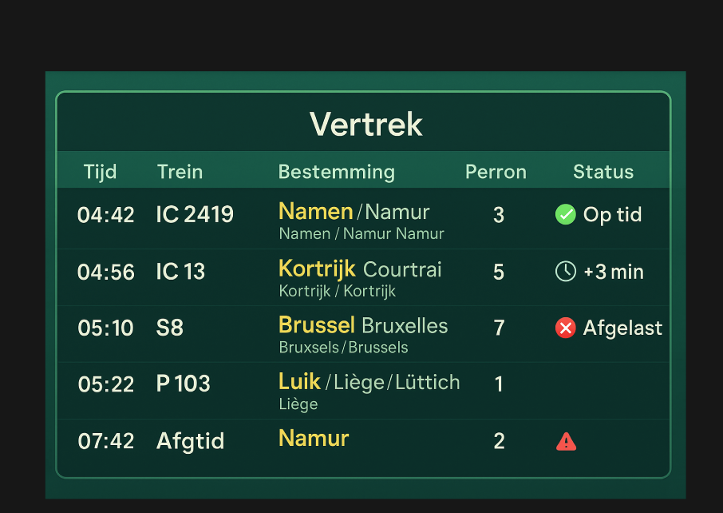
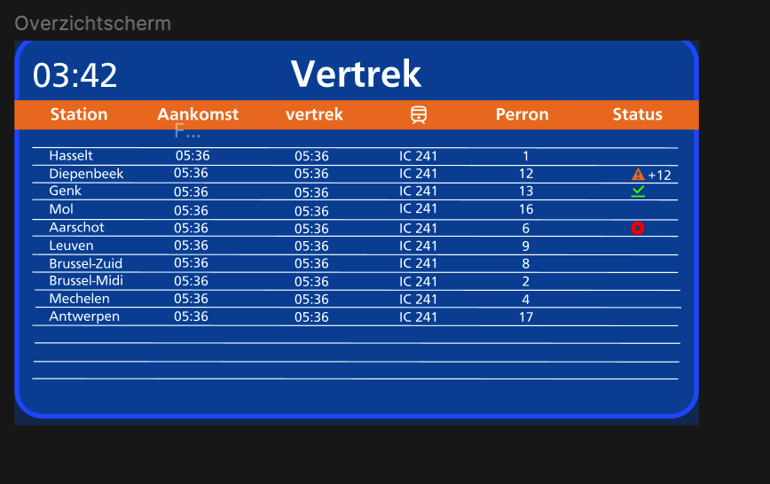

29 september 2025
Deze week heb ik mijn wireframes omgezet naar mid-fi prototypes in Figma. De belangrijkste focus lag op interfacehiërarchie, navigatieconsistentie, taalselectie en de visuele structuur van realtime informatie. Ik begon ook met basiselementen zoals knoppen, iconen en grids.






Mid-fi was een superbelangrijke fase. Ik merkte dat mijn ontwerp veel rustiger werd wanneer ik consistent werkte met een grid en herbruikbare componenten. Deze week voelde als de eerste “echte” vorm van mijn concept.